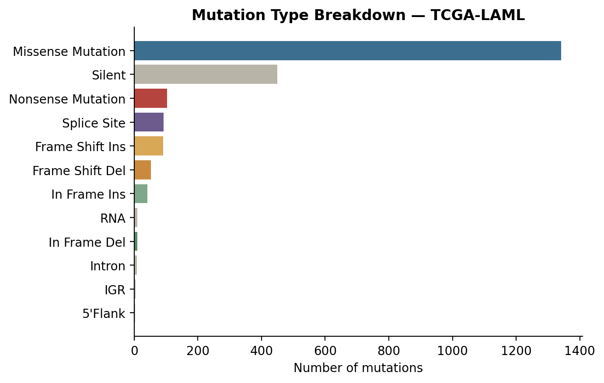
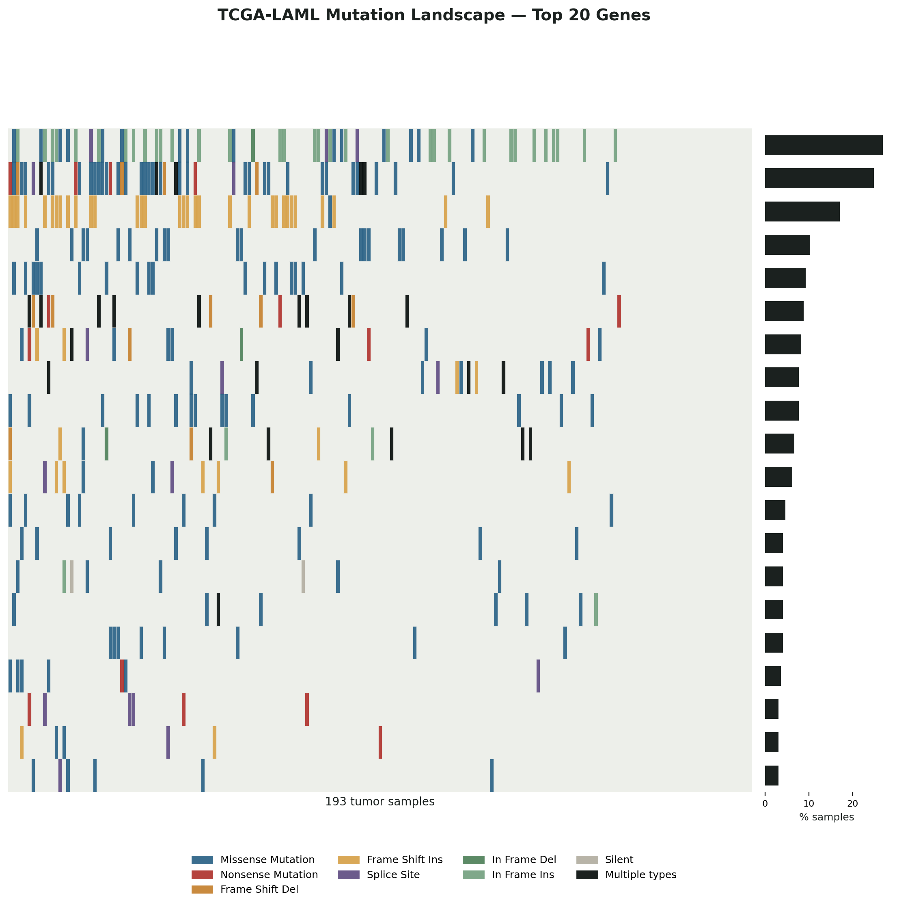

Mutation Landscape Explorer
Every cancer genomics analysis starts with the same question: which genes are actually mutated, and how often? This project answers that for TCGA-LAML, a public cohort of 193 acute myeloid leukemia (AML) patients, by building a cohort-level mutation summary and an oncoplot — the standard way cancer genomics papers visualize who has a mutation in what.
Data
The dataset is a MAF (Mutation Annotation Format) file: one row per somatic mutation,
with the gene, sample, and variant classification (missense, nonsense, frameshift, etc.)
for each. It's the same TCGA-LAML dataset distributed with the widely used
maftools R package, so the numbers below can be checked against the
published literature on this cohort.
Cohort summary
Mutation type breakdown
Missense mutations dominate the cohort, followed by silent (synonymous) mutations and nonsense mutations — a typical pattern for solid and hematologic tumors alike.

The oncoplot
The oncoplot below shows the 20 most frequently mutated genes (rows) across all 193 samples (columns), colored by mutation type. The side bar shows the percentage of patients carrying a mutation in that gene. FLT3, DNMT3A, and NPM1 top the list — exactly the trio best known to drive AML, which is a good sanity check that the pipeline is working correctly.

How it's built
The core logic groups mutations by gene and sample, keeps the variant classification (or marks a cell "Multi_Hit" if a sample has more than one mutation type in the same gene), then renders each cell as a colored rectangle:
gene_sample_counts = (
maf.groupby("Hugo_Symbol")["Tumor_Sample_Barcode"]
.nunique()
.sort_values(ascending=False)
)
top_genes = gene_sample_counts.head(20).index.tolist()
grouped = sub.groupby(["Hugo_Symbol", "Tumor_Sample_Barcode"])["Variant_Classification"] \
.apply(lambda x: x.iloc[0] if x.nunique() == 1 else "Multi_Hit")Full source, including the plotting code, is in the project's GitHub repo.
What I'd extend next
Natural follow-ups: cross-reference the top genes against a curated driver gene list (e.g. OncoKB or COSMIC Cancer Gene Census) to flag which are known drivers vs. recurrently-mutated passengers, and add co-occurrence/mutual-exclusivity testing between gene pairs — a common next step in cancer genomics papers.